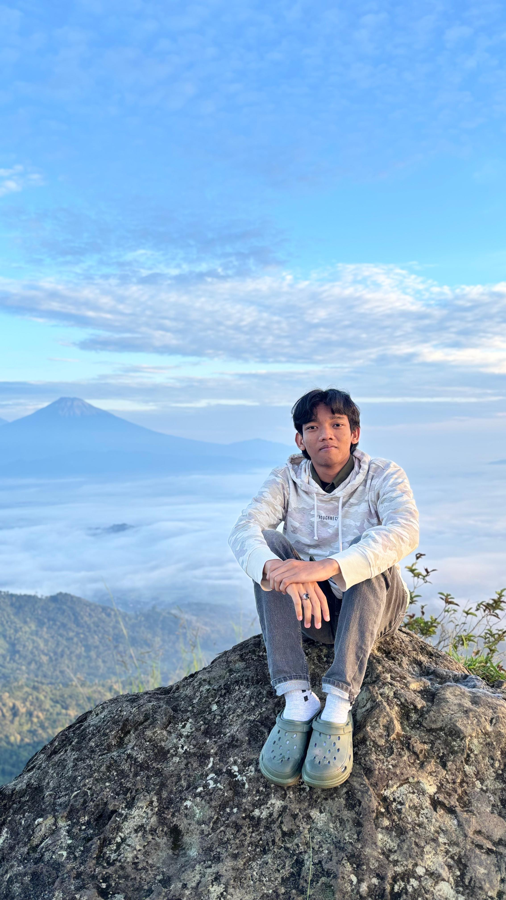

[ PROFIL PROFESIONAL ]
Ilyas Fandhi Anggara
>_ Sarjana Komputer & Calon Pendidik Informatika
Berdedikasi menciptakan pengalaman belajar digital yang transformatif, interaktif, dan berbasis TPACK.
[ 📧 KONTAK_SAYA ]// ✨ MENGENAL_LEBIH_DEKAT
> Halo! Saya Ilyas Fandhi Anggara, lahir dan tumbuh besar di Kabupaten Ogan Komering Ilir (OKI) Provinsi Sumatera Selatan. Daerah asal saya ini memiliki keunikan budaya seperti pempek dan songket, serta keindahan Sungai Musi. Masyarakatnya dikenal ramah, menjunjung tinggi kebersamaan, dan memiliki semangat gotong royong. Karakteristik lingkungan inilah yang turut membentuk karakter dan cara pandang saya dalam bersosialisasi hingga saat ini.
> Inspirasi saya untuk menjadi seorang guru berasal dari kakak saya. Melihat seseorang yang awalnya tidak bisa menjadi bisa memberikan kepuasan tersendiri. Melalui Pendidikan Profesi Guru (PPG) di UNY ini, tujuan utama saya adalah untuk bertransformasi menjadi pendidik yang inovatif, inklusif, dan berpihak pada peserta didik.
Pendidikan adalah senjata paling mematikan di dunia, karena dengan pendidikan, Anda dapat mengubah dunia.
JEJAK PENDIDIKAN
Pendidikan Profesi Guru (PPG) Prajabatan
Universitas Negeri Yogyakarta
Saat ini menempuh pendidikan profesi untuk bertransformasi menjadi guru yang profesional, inovatif, dan inklusif bagi peserta didik.
S1 Sistem Informasi
Universitas Islam Negeri Raden Intan Lampung
Lulus dengan gelar Sarjana Komputer (S.Kom). Mempelajari dan mengembangkan berbagai proyek terkait teknologi dan pendidikan.
SMAN 3 UNGGULAN KAYUAGUNG
Kabupaten Ogan Komering Ilir (OKI)
Jurusan Ilmu Pengetahuan Alam. Membangun fondasi logika berpikir dan sains.
HOBI & MINAT

Fotografi
Mengabadikan momen berharga dan keindahan sekitar melalui lensa kamera.

Membaca Buku
Membaca buku fiksi membantu saya meningkatkan empati dan meredakan stres.

Traveling
Menjelajahi tempat baru, menikmati pantai dan gunung untuk menyegarkan pikiran.